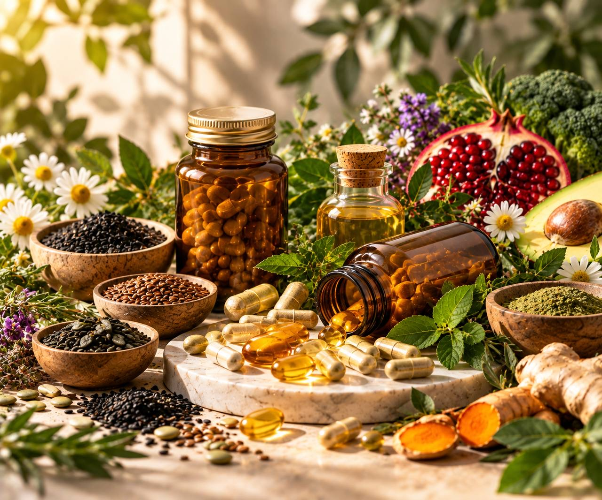
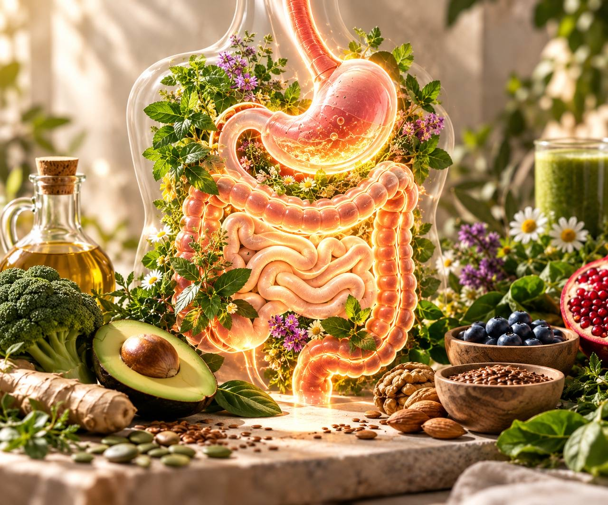
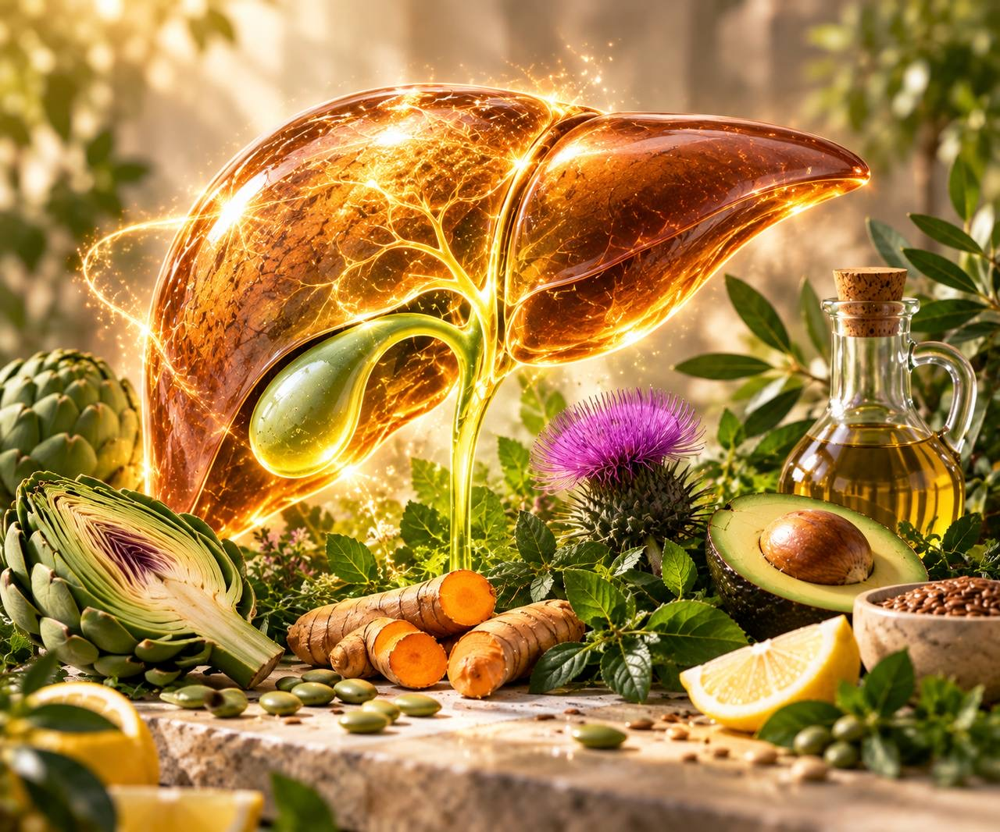
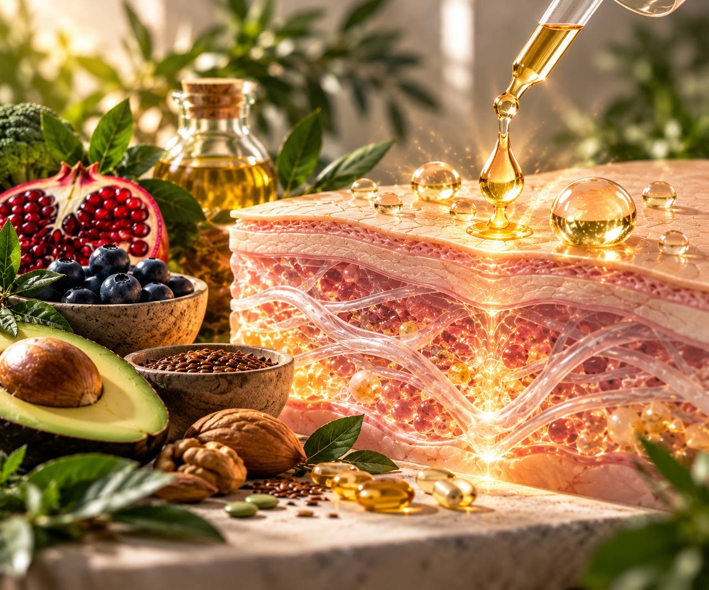
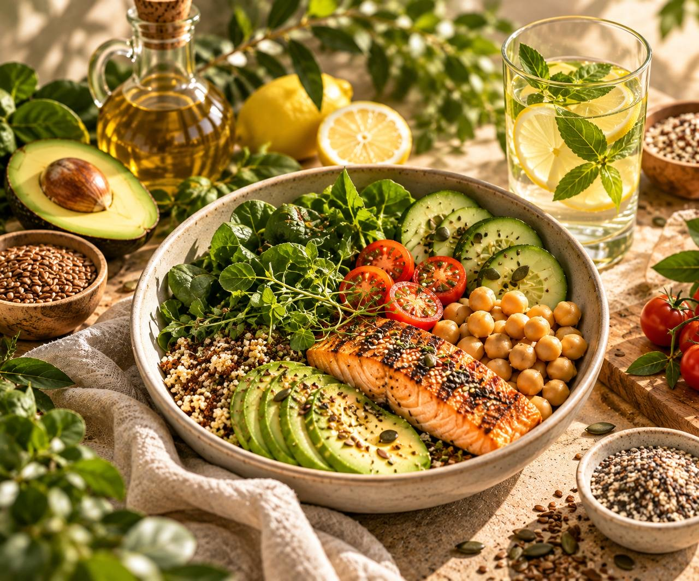

01
Знакомимся
Разбираем ваш запрос, самочувствие, питание, образ жизни и то, что уже пробовали изменить.
Я Амина, косметолог и дипломированный нутрициолог-консультант по коррекции веса и пищевого поведения.
Моя работа начинается с внимательного знакомства с вами: что беспокоит, как вы питаетесь, какие обследования уже проходили и что пробовали изменить.
Разбираю анализы в контексте самочувствия, рациона и образа жизни. Объясняю показатели понятным языком и помогаю выстроить последовательную работу с питанием и подтверждёнными дефицитами.
Мне важно, чтобы после консультации вы понимали, зачем нужна каждая рекомендация и как применить её в обычной жизни.

Я рассматриваю питание, самочувствие, образ жизни и результаты обследований как единую картину.
Важно не просто увидеть показатель в анализе, а понять его контекст и определить дальнейшие шаги.
Выберите направление, в котором сейчас особенно нужна поддержка.

Разбираем питание, режим и пищевые привычки. Определяем изменения, которые можно применять в обычной жизни.
Разбираем привычки, режим питания и отношение к еде. Выстраиваем более понятную систему питания.
Оцениваем текущий рацион, привычки, режим и возможные пробелы в питании.
Если вашей ситуации нет в списке, можно начать с консультации и определить, какой формат работы вам подходит.

Что означают ваши показатели? Нужны ли дополнительные обследования? Какие добавки действительно имеют смысл именно для вас?
На консультации:
Железо, витамин D, B12, цинк и другие нутриенты — по индивидуальной потребности.
Не нужно заранее покупать добавки или сдавать большой список анализов. Начнём с того, что у вас уже есть.
Записаться на разбор ↗Работа с нутриентами начинается не с покупки добавок, а с понимания вашей ситуации.
Обсуждаем питание, имеющиеся анализы, возможную необходимость добавок, их совместимость с текущими назначениями и контроль результатов.
Обсудить дефициты ↗
Разбираем ваш запрос, самочувствие, питание, образ жизни и то, что уже пробовали изменить.
Изучаем имеющиеся результаты обследований и сопоставляем их с питанием и жалобами.
Понимаем, что требует внимания в первую очередь и какие вопросы нужно дополнительно проверить.
Вы получаете последовательные рекомендации, которые можно применять в обычной жизни.

Вы будете понимать, что менять в первую очередь, как организовать питание и какие показатели важно отслеживать.
Не нужно заранее покупать добавки или сдавать большой список анализов. Начнём с того, что у вас уже есть.
Записаться ↗Нет. Можно начать с консультации и имеющихся результатов. Необходимость дополнительных обследований обсуждается отдельно.
Нет. Не нужно заранее покупать добавки. Сначала разбираемся в вашей ситуации и определяем, есть ли в них необходимость.
Да. Можно прийти с теми результатами, которые у вас уже есть, и разобрать их в контексте питания и самочувствия.
Это консультация нутрициолога. Вопросы, требующие медицинской диагностики или лечения, относятся к компетенции профильного врача.